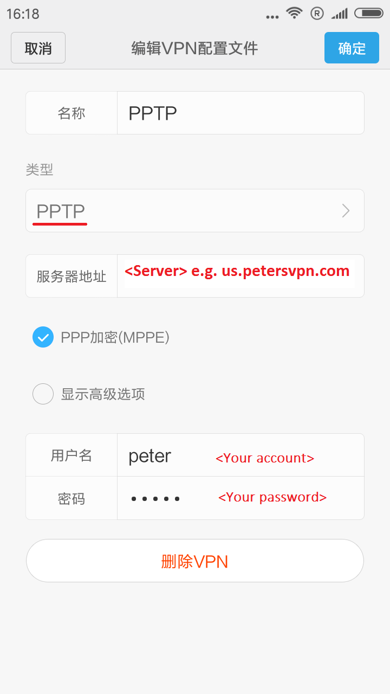
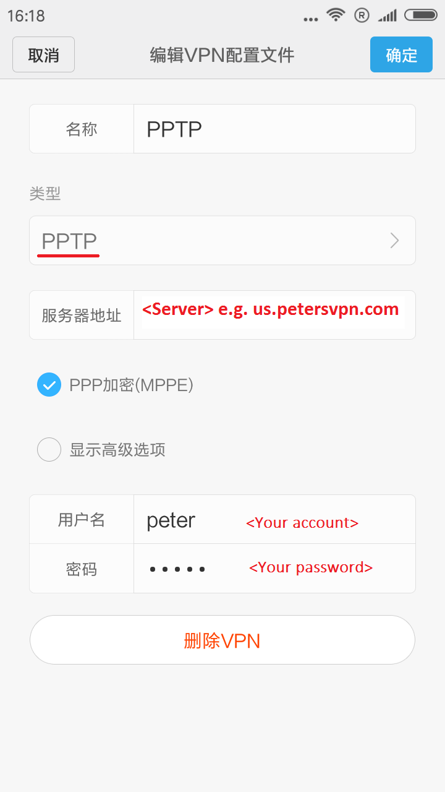

图一：
图二：

图三： 
Android用户进入设置/VPN, 新建VPN配置，选择'IPSec Xauth PSK' or 'L2TP/IPSec PSK' or 'PPTP'并填写下面信息。
VPN类型: 'IPSec Xauth PSK' (Recommended) or 'L2TP/IPSec PSK' or 'PPTP'
描述: 随意
服务器: usw.petersvpn.com
帐号: [your account]
密码: [your password]
密钥: petersvpn
其它: 默认设置
图一：
图二：
图三：
